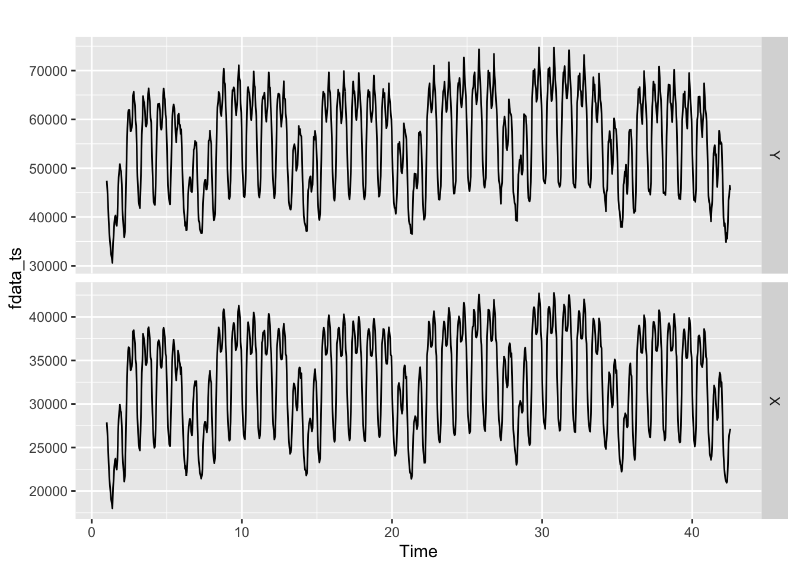
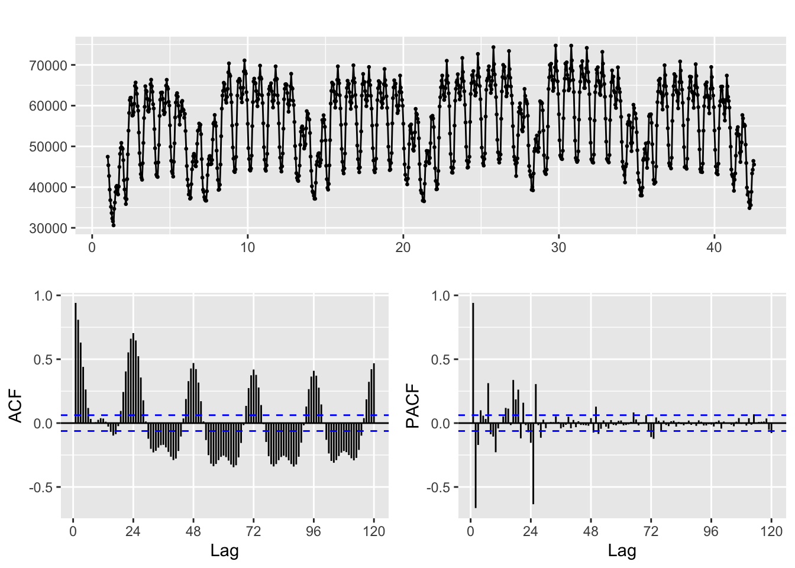
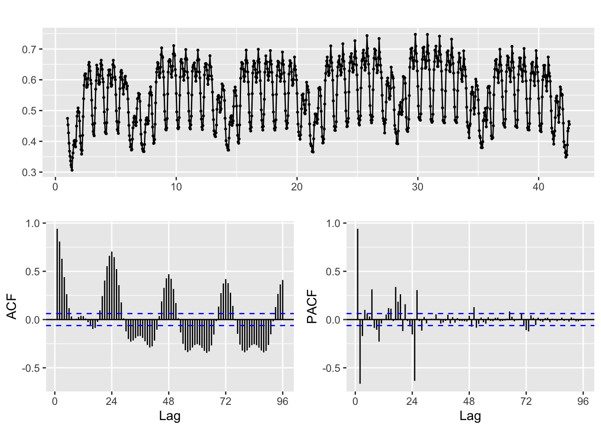
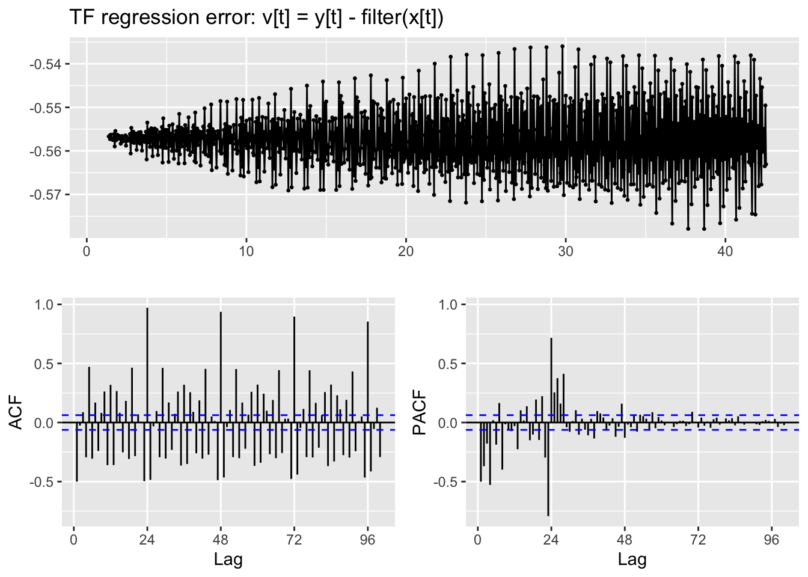
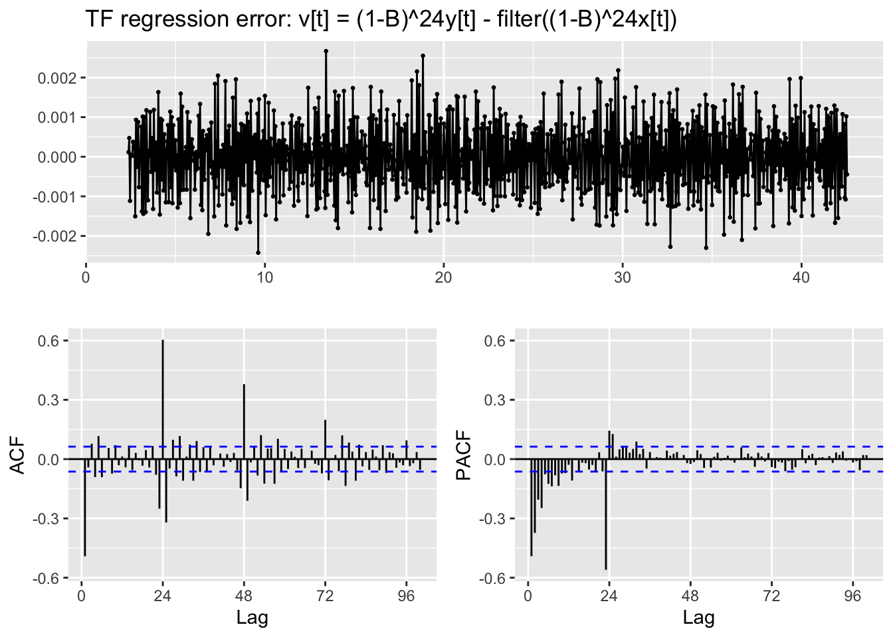
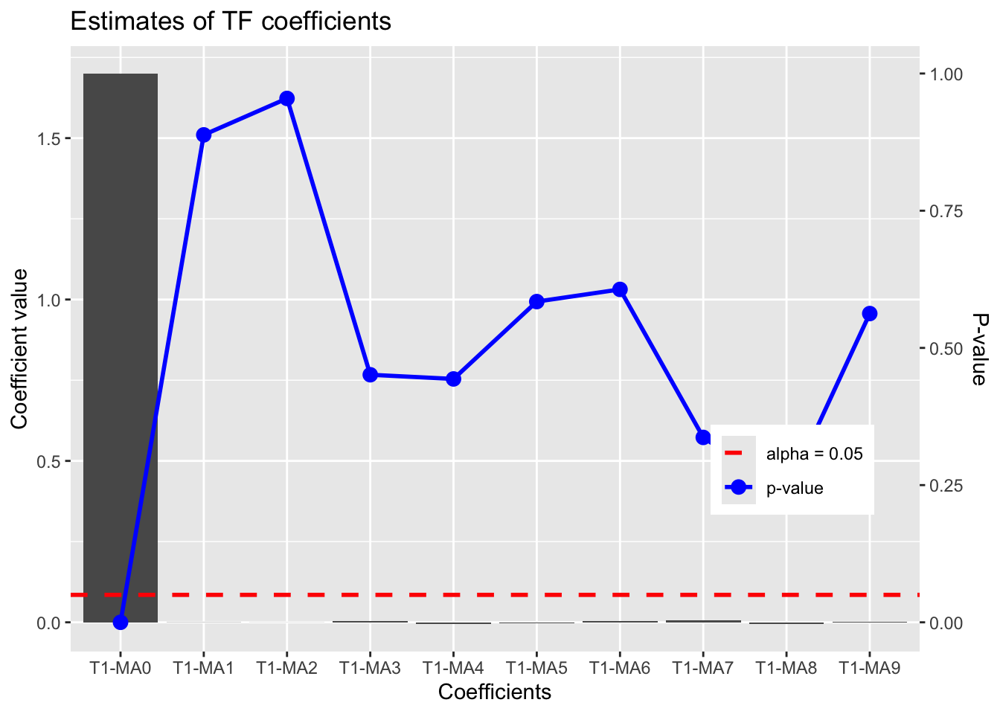
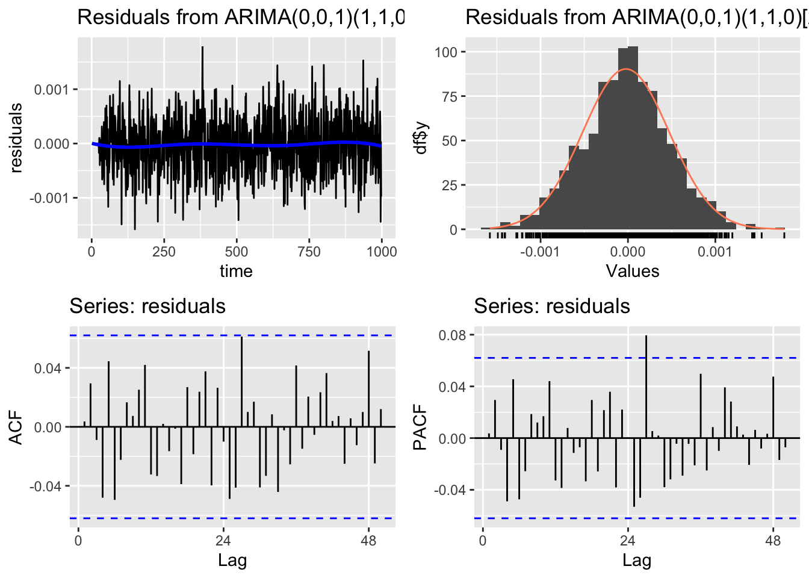
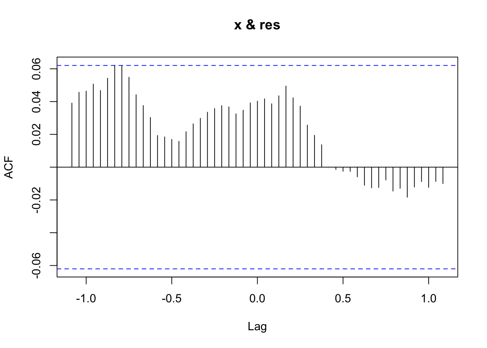
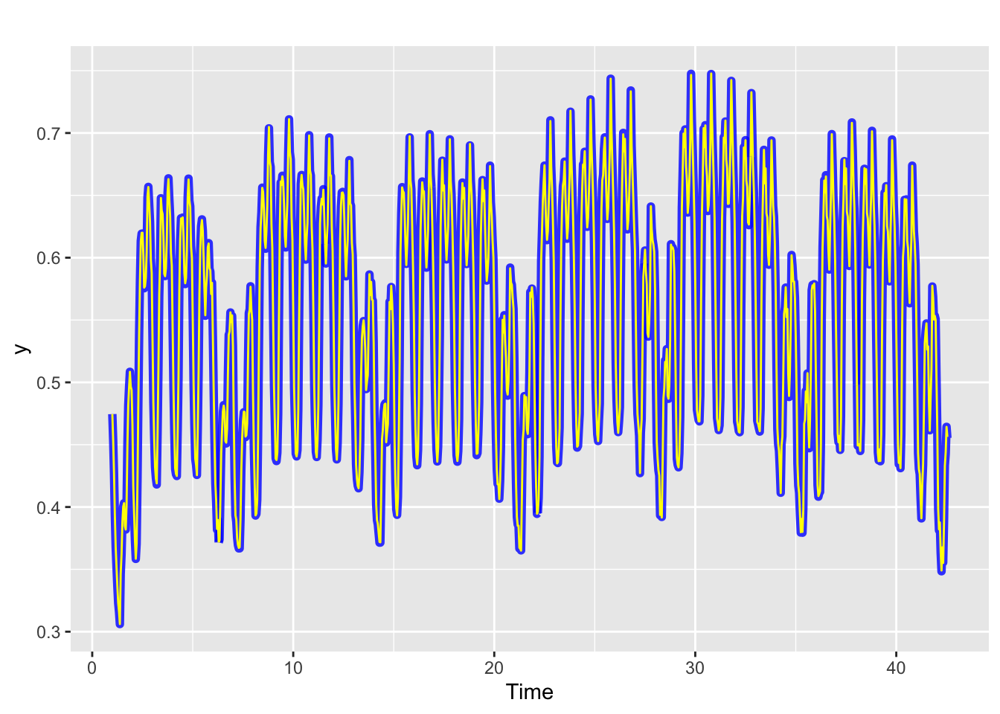
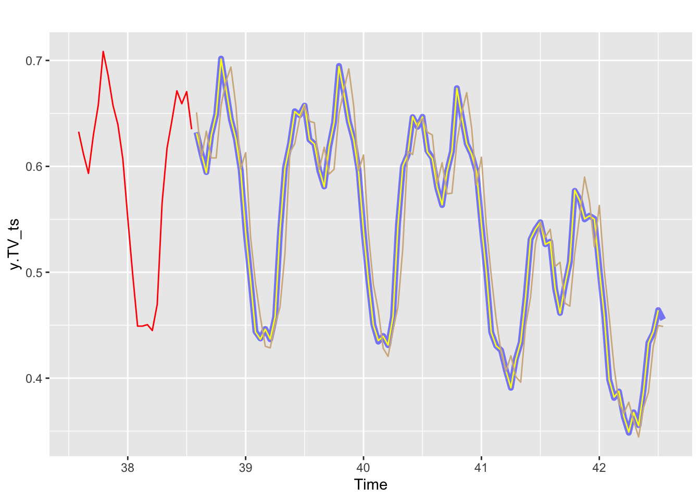

library(MLTools)
library(fpp2)
library(ggplot2)
library(TSA)
library(lmtest) #contains coeftest function
library(tseries) #contains adf.test function
library(Hmisc) # for computing lagged variablesLab. 7 Dynamic regression models- Seasonal example.
Preliminaries
Load libraries
Set working directory
setwd(dirname(rstudioapi::getActiveDocumentContext()$path))Load dataset, EDA and split train/test
fdata <- read.table("Seasonal_TF_1.dat",header = TRUE, sep = "")
head(fdata) Y X
1 47453.75 27893.2
2 45357.50 26662.4
3 42732.85 25120.7
4 39380.79 23197.7
5 36787.20 21664.1
6 35161.46 20652.0# If you need to change column names
colnames(fdata) <- c("Y","X")Convert to time series object. In this case the frequency will be apparent in the time plot below:
freq <- 24
fdata_ts <- ts(fdata, frequency = freq)and get an initial time plot (sometimes using head to zoom in helps)
autoplot(fdata_ts, facets = TRUE)
# autoplot(head(fdata_ts, 100), facets = TRUE)ggtsdisplay(fdata_ts[,1], lag=5 * freq)
Scale values
When the range of the variables is very different, we recommend scaling them to facilitate the identification of the model.
y <- fdata_ts[,1]/100000
x <- fdata_ts[,2]/100000Train/Test split
test_size = 4 * freq
y.TR <- subset(y, end = length(y) - test_size)
x.TR <- subset(x, end = length(y) - test_size)
tail(y.TR)Time Series:
Start = c(38, 9)
End = c(38, 14)
Frequency = 24
[1] 0.6172487 0.6435051 0.6712825 0.6591489 0.6705313 0.6350222y.TV <- subset(y, start = length(y) - test_size + 1)
x.TV <- subset(x, start = length(y) - test_size + 1)
head(y.TV)Time Series:
Start = c(38, 15)
End = c(38, 20)
Frequency = 24
[1] 0.6321822 0.6121538 0.5945612 0.6297521 0.6489584 0.7017342Identification and fitting process
ggtsdisplay(y, lag=4 * freq)
First TF model
Fit initial FT model with large s
# This arima function belongs to the TSA package
TF.fit <- arima(y.TR,
order=c(1, 0, 0),
seasonal = list(order=c(1, 0, 0), period=freq),
xtransf = x.TR,
transfer = list(c(0,9)), #List with (r,s) orders
include.mean = TRUE,
method="ML")Warning in arima(y.TR, order = c(1, 0, 0), seasonal = list(order = c(1, :
possible convergence problem: optim gave code=1# Check regression error to see the need of differentiation
TF.RegressionError.plot(y,x,TF.fit,lag.max = 100)Warning: Removed 9 rows containing missing values or values outside the scale range
(`geom_point()`).
Second model
Seasonal differencing is required
NOTE: If this regression error is not stationary in variance,boxcox should be applied to input and output series.
TF.fit <- arima(y.TR,
order=c(1, 0, 0),
seasonal = list(order=c(1, 1, 0), period=freq),
xtransf = x.TR,
transfer = list(c(0,9)), #List with (r,s) orders
include.mean = TRUE,
method="ML")Check regression error to see the need of differentiation
TF.RegressionError.plot(y,x,TF.fit,lag.max = 100)Warning: Removed 9 rows containing missing values or values outside the scale range
(`geom_point()`).
Identify the transfer function parameters for the explanatory variable
TF.Identification.plot(x,TF.fit)
Estimate Std. Error z value Pr(>|z|)
T1-MA0 1.7001612456 0.002050621 829.09597813 0.0000000
T1-MA1 -0.0006336741 0.004507068 -0.14059564 0.8881894
T1-MA2 -0.0003059586 0.005373127 -0.05694238 0.9545911
T1-MA3 0.0041234214 0.005471515 0.75361605 0.4510798
T1-MA4 -0.0041941629 0.005472650 -0.76638610 0.4434466
T1-MA5 -0.0029931882 0.005472197 -0.54698105 0.5843917
T1-MA6 0.0028206119 0.005477613 0.51493451 0.6065988
T1-MA7 0.0051645575 0.005378007 0.96031059 0.3368989
T1-MA8 -0.0053266681 0.004485605 -1.18750278 0.2350294
T1-MA9 0.0011680561 0.002017348 0.57900585 0.5625852Fit arima noise with the selected (b, r, s) and ARMA orders
p <- 0 ; d <- 0; q <- 1;
P <- 1 ; D <- 1; Q <- 0;
b <- 0; r <- 0; s <- 0;xlag = Lag(x, b) # b
xlag[is.na(xlag)]=0arima.fit <- arima(y,
order=c(p, d, q),
seasonal = list(order=c(P, D, Q), period=freq),
xtransf = xlag,
transfer = list(c(r, s)), #List with (r,s) orders
include.mean = FALSE,
method="ML")Diagnostics of the fitted model
summary(arima.fit) # summary of training errors and estimated coefficients
Call:
arima(x = y, order = c(p, d, q), seasonal = list(order = c(P, D, Q), period = freq),
include.mean = FALSE, method = "ML", xtransf = xlag, transfer = list(c(r,
s)))
Coefficients:
ma1 sar1 T1-MA0
-0.9035 0.6044 1.7000
s.e. 0.0143 0.0254 0.0001
sigma^2 estimated as 2.518e-07: log likelihood = 6011.41, aic = -12016.82
Training set error measures:
ME RMSE MAE MPE MAPE
Training set -2.297759e-05 0.0004957689 0.000387598 -0.005134353 0.07152603
MASE ACF1
Training set 0.01473846 0.003615161Check the statistical significance of estimated coefficients
coeftest(arima.fit)
z test of coefficients:
Estimate Std. Error z value Pr(>|z|)
ma1 -9.0353e-01 1.4331e-02 -63.049 < 2.2e-16 ***
sar1 6.0437e-01 2.5379e-02 23.814 < 2.2e-16 ***
T1-MA0 1.7000e+00 5.8982e-05 28822.203 < 2.2e-16 ***
---
Signif. codes: 0 '***' 0.001 '**' 0.01 '*' 0.05 '.' 0.1 ' ' 1Check residuals
CheckResiduals.ICAI(arima.fit, lag=50)
Ljung-Box test
data: Residuals from ARIMA(0,0,1)(1,1,0)[24]
Q* = 43.741, df = 47, p-value = 0.6084
Model df: 3. Total lags used: 50Cross correlation between the residuals and the explanatory variable
res <- residuals(arima.fit)
res[is.na(res)] <- 0
ccf(y = res, x = x)
Visual check of the fitted values vs real values in the training period
autoplot(y, series = "Real", size = 2, alpha=0.8, color="blue") +
forecast::autolayer(fitted(arima.fit), series = "Fitted", color="yellow")
Training errors of the model
accuracy(fitted(arima.fit),y.TR) ME RMSE MAE MPE MAPE
Test set -2.678238e-05 0.0004916385 0.0003846799 -0.005772267 0.07059664
ACF1 Theil's U
Test set 0.02444929 0.01486522Forecast for new data with h = 1
h <- 1
y.TV.est <- y * NA
for (i in seq(length(y.TR) + 1, length(y) - h, 1)){# loop for validation period
y.TV.est[i] <- TF.forecast(y.old = subset(y,end=i-1), #past values of the series
x.old = subset(x,end=i-1), #Past values of the explanatory variables
x.new = subset(x,start = i,end=i), #New values of the explanatory variables
model = arima.fit, #fitted transfer function model
h=h)[h] #Forecast horizon
}
y.TV.est <- na.omit(y.TV.est)Direct forecast:
y.TV.est2 <- TF.forecast(y.old = subset(y,end=i-1), #past values of the series
x.old = subset(x,end=i-1), #Past values of the explanatory variables
x.new = subset(x,start = i,end=i), #New values of the explanatory variables
model = arima.fit, #fitted transfer function model
h=length(y.TV)) #forecast horizonPlot of the forecast
y.TV_ts <- ts(y.TV, frequency = freq, start = end(y.TR) + c(0, 1))
y.TV.est_ts <- ts(y.TV.est, frequency = freq, start = end(y.TR) + c(0, 1))
y.TV.est2_ts <- ts(y.TV.est2, frequency = freq, start = end(y.TR) + c(0, 1))
head(y.TV_ts)Time Series:
Start = c(38, 15)
End = c(38, 20)
Frequency = 24
[1] 0.6321822 0.6121538 0.5945612 0.6297521 0.6489584 0.7017342autoplot(y.TV_ts, series = "Test set, real values", size=2, alpha=0.5, color="blue") +
forecast::autolayer(y.TV.est_ts, series = "Forecast", color = "yellow") +
forecast::autolayer(y.TV.est2_ts, series = "Direct Forecast", color = "tan") +
forecast::autolayer(tail(y.TR, freq), series = "Training data", color = "red") 
accuracy(y.TV.est*100000,y.TV*100000) ME RMSE MAE MPE MAPE ACF1 Theil's U
Test set 2.320657 52.6324 40.90836 0.003130764 0.07884087 -0.1405088 0.01597259accuracy(y.TV.est2*100000,y.TV*100000) ME RMSE MAE MPE MAPE ACF1 Theil's U
Test set -188.0198 3484.899 2772.375 -0.5456024 5.264209 0.4830753 1.042203